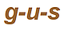
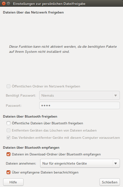
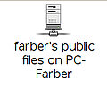

gnome-user-share
Dieser Artikel wurde für die folgenden Ubuntu-Versionen getestet:
Ubuntu 16.04 Xenial Xerus
Zum Verständnis dieses Artikels sind folgende Seiten hilfreich:
Einbindung einzelner Ordner, optional
Ein Terminal öffnen, optional
Mit Root-Rechten arbeiten, optional
 gnome-user-share ist ein kleines Programm, das auf einfache Weise einen Datenaustausch zwischen Rechnern mit den grafischen Oberfläche (GUI) GNOME bzw Unity für jedermann möglich macht. Die Kommunikation kann dabei über ein (kleines) lokales Netzwerk (LAN oder WLAN). Das Programm eignet sich vor allem für den privaten Gebrauch ohne besondere Ansprüche an die Sicherheit und den Missbrauch-Schutz. Für einen Datenaustausch über unsichere Netze oder gar übers Internet eignet sich gnome-user-share nicht.
Bei älteren Versionen von Ubuntu war auch der Datentausch via Bluetooth möglich, die Funktion ist in neueren Versionen nicht mehr verfügbar.
Für die Bereitstellung der Freigaben im lokalen Netzwerk verwendet gnome-user-share einen Apache-Webserver mit WebDAV auf der Grundlage von Avahi. Dieser muss nötigenfalls zusätzlich installiert werden. Interessierte finden Hintergrundwissen und weitere Einzelheiten in den Artikeln Apache, WebDAV und Avahi. Eine neuere Alternative zu gnome-user-share ist Meiga.
Im Gegensatz zu net usershare, das z.B. von den Dateimanagern Nautilus und Dolphin standardmäßig für Netzwerk-Freigeben verwendet wird, ist gnome-user-share trotz des ähnlich klingenden Namens kein Teil des umfassenden Netzwerk-Dienstes Samba. Einstellungen, die für Samba vorgenommen wurden (also auch der gesamte Inhalt der Datei smb.conf) sind für gnome-user-share ohne Bedeutung.
Hinweis:
Im Folgenden wird der Rechner, auf dem Dateien freigegeben werden, mit Server und der Rechner, von dem aus auf die Freigaben zugegriffen wird, mit Client bezeichnet.
Installation¶
Das Metapaket gnome-user-share ist bei Ubuntu (nicht jedoch bei Xubuntu und Lubuntu) standardmäßig vorinstalliert. Bei anderen Ubuntu-Varianten ist die Installation des folgenden Metapakets nötig:
gnome-user-share (universe)
 mit apturl
mit apturl
Paketliste zum Kopieren:
sudo apt-get install gnome-user-share
sudo aptitude install gnome-user-share
Für die Kommunikation im Netzwerk benötigt gnome-user-share einen Apache-Webserver. Aus Gründen der Sicherheit wird dieser nicht mehr automatisch installiert. Es müssen daher zusätzlich die folgenden Pakete installiert werden [1]:
apache2-bin (Basispaket für den Webserver)
libapache2-mod-dnssd (Ankündigung im lokalen Netzwerk über Avahi)
mit apturl
Paketliste zum Kopieren:
sudo apt-get install apache2-bin libapache2-mod-dnssd
sudo aptitude install apache2-bin libapache2-mod-dnssd
Anwendung¶
Einrichten des Servers¶
Normalerweise befindet sich auf dem Server im eigenen Heimverzeichnis ein Ordner mit dem Namen ~/Öffentlich/. Sollte dieser fehlen, so muss er zuerst angelegt und für jedermann zum Lesen und Schreiben freigegeben werden. In diesen Ordner kopiert bzw. verschiebt man alle Dateien, auf die vom Client aus über gnome-user-share zugegriffen werden soll.

Über die Eingabe von "Persönliche Dateifreigabe" auf der Dash-Startseite wird das Konfigurationsprogramm gnome-file-share-properties gestartet und es erscheint das nebenstehende Dialogfenster.
Bei Xubuntu und Lubuntu existiert kein Programmstarter im Anwendungsmenü. Man muss dort den Befehl gnome-file-share-properties entweder über
Alt +
F2 direkt eingeben oder selbst einen Starter erstellen.
Freigaben über das Netzwerk¶
Erscheint im Bereich "Dateien über das Netzwerk freigeben" der Hinweis:
"Diese Funktion kann nicht aktiviert werden, da die benötigten Pakete auf Ihrem System nicht installiert sind."
dann muss zuerst noch der Apache-2 Webserver nachinstalliert werden (siehe oben).
Dateien im Ordner "Öffentlich" freigeben¶
Bei dieser Option werden alle Dateien und Ordner, die sich im Ordner ~/Öffentlich/ im eigenen Heimverzeichnis befinden, für den Zugriff über das lokale Netzwerk freigegeben. Dabei besteht noch die Möglichkeit eines einfachen Passwort-Schutzes. Dieses Passwort wird jedoch unverschlüsselt übertragen und bietet deshalb keinen wirksamen Schutz wie z.B. ein verschlüsselt übertragenes Samba-Passwort. Man kann wählen, ob auf dem Client eine Eingabe des Passworts niemals, nur beim Schreiben von Dateien oder immer verlangt wird.
Mit gnome-user-share ist es nicht möglich, nur einzelne Dateien freizugeben oder Freigabe-Optionen für einzelne Dateien differenziert festzulegen. Dies lässt sich am einfachsten mit net usershare realisieren, das auch von vielen Dateimanagern standardmäßig unterstützt wird.
Dateien aus anderen Ordnern freigeben¶
Möchte man auch Ordner oder Dateien übers Netzwerk freigeben, die sich nicht im Ordner ~/Öffentlich/ befinden, so reicht es nicht, für diese eine Verknüpfung (Symlink) einzurichten, da gnome-user-share diese ignoriert. Einen Ausweg bietet der Befehl mount --bind [2]. Dieser erfordert allerdings gewisse Kenntnisse im Umgang mit Linux, da er in einem Terminal [3] mit Root-Rechten [4] ausgeführt werden muss.
So wird zum Beispiel mit den beiden Befehlszeilen:
sudo mkdir ~/Öffentlich/Musik sudo mount --bind /media/Daten/Musik ~/Öffentlich/Musik
zunächst im Ordner ~/Öffentlich/ der Mountpunkt Musik als Besitz von "Root" eingerichtet und dann der Ordner /media/Daten/Musik/ dort temporär (d.h. nur für die betreffende Sitzung) zusätzlich eingebunden. Damit steht er mit seinem gesamten Inhalt für die Freigabe zur Verfügung.
Soll der gleiche Ordner immer wieder freigegeben werden, empfiehlt sich folgender Eintrag in der Datei /etc/fstab:
/media/Daten/Musik /home/<username>/Öffentlich/Musik none bind 0 0
Dadurch wird dieser Ordner beim Systemstart zusätzlich statisch im Ordner ~/Öffentlich/ eingebunden und steht somit ständig für die Freigabe zur Verfügung. Nähere Einzelheiten siehe mount und fstab.
Auf diese Weise gelingt es auch, Laufwerke (CDROM, Daten-DVD, aber keine Musik-CD oder Video-DVD) sowie USB-Datenträger über gnome-user-share freizugeben.
Einrichten des Client¶
Client für das Netzwerk¶
Damit ein Rechner mit GNOME als Client auf Dateien zugreifen kann, die mittels gnome-user-share über das Netzwerk freigegeben wurden, braucht nichts zusätzlich installiert oder eingerichtet zu werden. Man wählt im Hauptmenü den Eintrag
"Orte -> Netzwerk"

Im sich öffnenden Auswahlfenster findet man ein Symbol wie nebenstehend abgebildet. Nach einem Doppelklick auf dieses öffnet sich ein Auswahlfenster mit allen über gnome-user-share auf dem betreffenden Server freigegebenen Ordnern und Dateien. Gleichzeitig erscheint auf dem Desktop das Symbol für einen Netzwerk-Ordner mit der Bezeichnung "WebDAV auf <IP-Adresse des Servers>". Man kann in der üblichen Weise auf diese zugreifen.
Auch in KDE werden die mit gnome-user-share vorgenommenen Freigaben im Dateibrowser Konqueror als Netzwerk-Ordner dargestellt, sodass man auch dort in ähnlicher Weise auf sie zugreifen kann.
Dateiattribute und Sicherheit¶
Man sollte sich immer bewusst bleiben, dass gnome-user-share für den privaten Gebrauch konzipiert wurde. Bei sensiblen Daten sollte man unbedingt auf eines der Netzwerk-Protokolle wie Samba, SSH oder NFS zurückgreifen, die wesentlich wirksamere Möglichkeiten zum Schutz vor Missbrauch und unberechtigtem Zugriff bieten.
Dateiattribute¶
Dateirechte¶
Die auf dem Server geltenden Besitz- und Zugriffsrechte werden von gnome-user-share nicht auf den Client übertragen. Die Freigabe ist grundsätzlich "öffentlich", und der Zugriff vom Client aus erfolgt als "Gast" (guest). Dem Gast werden dabei ohne Kontrolle seiner Identität für die Freigabe alle Rechte zugestanden, die der Besitzer auf dem Server hat.
Werden über gnome-user-share neue Ordner oder Dateien angelegt, so werden die Besitz- und Zugriffsrechte für diese auf dem Server vom Ordner "Öffentlich" übernommen.
Zeitstempel¶
Mit dem Begriff "Zeitstempel" (timestamp) bezeichnet man bei Dateien und Ordnern die Zeitangaben für die Erstellung und den letzten Zugriff. Der Zeitstempel wird von gnome-user-share nicht übertragen. Beim Kopieren von Dateien über gnome-user-share gehen diese Informationen verloren (bzw. werden diese durch die aktuelle Zeit ersetzt).
Werden hingegen über gnome-user-share Ordner oder Dateien neu angelegt oder verändert, wird auf dem Server der Zeitstempel korrekt eingetragen bzw. aktualisiert.
Schutz vor unerwünschtem Zugriff¶
LAN und WLAN¶
Befindet sich der Server vom Internet aus gesehen hinter einem Router mit NAT, so bietet dieser in der Regel einen hinreichenden Schutz vor unerwünschten Zugriffen aus dem Internet. Ist der Server hingegen direkt mit dem Internet verbunden oder selbst der Router, dann sind zusätzliche Schutzmaßnahmen angebracht. Gleiches gilt, wenn der Server auch für den Zugang zu fremden oder öffentlichen Netzen verwendet wird (z.B. ein Laptop). Näheres hierzu siehe unter Apache.
Achtung!
Bei einem Internet-Zugang ohne Router mit NAT muss unbedingt dafür gesorgt werden, dass kein unerwünschter Zugriff auf die Freigaben übers Internet möglich ist!
Hinweis:
Es ist ein wichtiges Sicherheits-Prinzip von Ubuntu, nicht mehr Ports zu öffnen, als unbedingt nötig. Wird für gnome-user-share ein Apache-Webserver eingerichtet, so lauscht dieser standardmäßig auf dem Port 80. Gnome-user-share verwendet aber einen eigenen Webserver mit einem anderen Port. Wenn der Apache-Webserver nicht anderweitig gebraucht wird, sollte man diesen in
"System -> Systemverwaltung -> Dienste"
aus Sicherheitsgründen unbedingt deaktivieren.
Problembehebung¶
Einschränkungen oder Mängel¶
Eine Anwendung kann nicht zugreifen¶
Für die Bereitstellung der Freigaben auf dem Client wird Apache/mod dav verwendet. Deshalb beginnt der Zugriffspfad mit dav://.... Viele, aber leider nicht alle Anwendungsprogramme kommen mit dieser Syntax zurecht. Im Problemfall empfiehlt es sich, für die betreffenden Ordner oder Dateien der Freigabe (nicht aber für die gesamte Freigabe) symbolische Verknüpfungen (Symlinks) mit "normalen" Dateinamen anzulegen.
Kein Download ganzer Ordner möglich¶
Hier handelt es sich um ein Problem (Bug) im Backend von WebDAV in gvfs. Auch hier hilft der alternative Zugriff über den versteckten Ordner ~/.gvfs/WebDAV/ über die IP-Adresse des Servers. Auf diesem Weg lassen sich auch ganze Ordner problemlos kopieren.
Links¶
Persönliche Dateifreigabe

 - Handbuch
- Handbuchnet usershare - einfaches Samba-Werkzeug zur Freigabe einzelner Ordner und Dateien im lokalen Netzwerk ("Samba für jedermann")
Heimnetzwerk - Alternativen zur Nutzung eines lokalen Netzwerks
- Erstellt mit Inyoka
-
 2004 – 2017 ubuntuusers.de • Einige Rechte vorbehalten
2004 – 2017 ubuntuusers.de • Einige Rechte vorbehalten
Lizenz • Kontakt • Datenschutz • Impressum • Serverstatus -
Serverhousing gespendet von